- 问题1 java开启线程的方式
- 问题2 linux杀死进程查看内存、cpu、磁盘命令
- 问题3 spring IOC 和 AOP
- 问题4 java 6 7 8 的区别（实际应该是新特性）
- 问题5 J2EE Servlet
问题1 java开启线程的方式
开启线程的方式
三种方式：
- 从Thread类继承
- 实现Runnable接口
- 直接在函数体实现（本质和Runnable接口还是相同的）
运行代码
// 方式1 从Thread继承
class ExtendThread extends Thread{
public synchronized void run(){
System.out.println("extend thread running");
}
}
//方式2 实现Runnable接口
class ImplRun implements Runnable{
@Override
public void run() {
// TODO Auto-generated method stub
System.out.println("implRun running");
}
}
public class Test {
public static void main(String[] args) {
ExtendThread t1 = new ExtendThread();
t1.start();
ImplRun ir = new ImplRun();
new Thread(ir).start();
t1.run();
ir.run();
//方式3 函数体内实现
Thread t = new Thread(new Runnable() {
@Override
public void run() {
// TODO Auto-generated method stub
System.out.println("Running in func");
}
});
t.start();
}
}
三种方式对比
实现Runnable接口优势：
-
适合多个相同的程序代码的线程去处理同一个资源
-
可以避免java中的单继承的限制
-
增加程序的健壮性，代码可以被多个线程共享，代码和数据独立。
继承Thread类优势：
-
可以将线程类抽象出来，当需要使用抽象工厂模式设计时。
-
多线程同步
在函数体使用优势
- 无需继承thread或者实现Runnable，缩小作用域。
线程的状态
在Java当中，线程通常都有五种状态，创建、就绪、运行、阻塞和死亡。
- 第一是创建状态。在生成线程对象，并没有调用该对象的start方法，这是线程处于创建状态。
- 第二是就绪状态。当调用了线程对象的start方法之后，该线程就进入了就绪状态，但是此时线程调度程序还没有把该线程设置为当前线程，此时处于就绪状态。在线程运行之后，从等待或者睡眠中回来之后，也会处于就绪状态。
- 第三是运行状态。线程调度程序将处于就绪状态的线程设置为当前线程，此时线程就进入了运行状态，开始运行run函数当中的代码。
- 第四是阻塞状态。线程正在运行的时候，被暂停，通常是为了等待某个时间的发生(比如说某项资源就绪)之后再继续运行。sleep,suspend，wait等方法都可以导致线程阻塞。
- 第五是死亡状态。如果一个线程的run方法执行结束或者调用stop方法后，该线程就会死亡。对于已经死亡的线程，无法再使用start方法令其进入就绪。
多线程原理及start() 和 run()区别
两次运行上面的代码发现结果却不相同：
多线程原理：相当于玩游戏机，只有一个游戏机（cpu），可是有很多人要玩，于是，start是排队！等CPU选中你就是轮到你，你就run（），当CPU的运行的时间片执行完，这个线程就继续排队，等待下一次的run（）。
调用start（）后，线程会被放到等待队列，等待CPU调度，并不一定要马上开始执行，只是将这个线程置于可动行状态。然后通过JVM，线程Thread会调用run（）方法，执行本线程的线程体。先调用start后调用run，这么麻烦，为了不直接调用run？就是为了实现多线程的优点，没这个start不行。
1.start（）方法来启动线程，真正实现了多线程运行。这时无需等待run方法体代码执行完毕，可以直接继续执行下面的代码；通过调用Thread类的start()方法来启动一个线程， 这时此线程是处于就绪状态， 并没有运行。 然后通过此Thread类调用方法run()来完成其运行操作的， 这里方法run()称为线程体，它包含了要执行的这个线程的内容， Run方法运行结束， 此线程终止。然后CPU再调度其它线程。 2.run（）方法当作普通方法的方式调用。程序还是要顺序执行，要等待run方法体执行完毕后，才可继续执行下面的代码； 程序中只有主线程——这一个线程， 其程序执行路径还是只有一条， 这样就没有达到写线程的目的。 记住：多线程就是分时利用CPU，宏观上让所有线程一起执行 ，也叫并发
Thread源码
native关键字
上面的start0()为native关键字标识的方法。 一个Native Method就是一个java调用非java代码的接口。一个Native Method是这样一个java的方法：该方法的实现由非java语言实现，比如C。这个特征并非java所特有，很多其它的编程语言都有这一机制，比如在C＋＋中，你可以用extern "C"告知C＋＋编译器去调用一个C的函数。 "A native method is a Java method whose implementation is provided by non-java code." 在定义一个native method时，并不提供实现体（有些像定义一个java interface），因为其实现体是由非java语言在外面实现的。 native修饰的方法还有Object类的public final native Class getClass();
问题2 linux杀死进程查看内存、cpu、磁盘命令
linux命令相关提问 如果有额外的提问具体参数命令，回答-h --help或man看一些具体的说明再试试就知道了，里面会写明参数的具体意思。 以下中$[key] 代表去变量值的意思
杀死进程
kill -9 $PID PID为对应进程的进程ID,如何查看某个进程的pid可参考下面的样例。 kill就是给某个进程id发送了一个信号。默认发送的信号是SIGTERM，而kill -9发送的信号是SIGKILL，即exit。exit信号不会被系统阻塞，所以kill -9能顺利杀掉进程
查看内存

其中-m标识将容量值以m为单位进行展现
查看cpu
TOP命令是Linux下常用的性能分析工具，能够实时显示系统中各个进程的资源占用状况。类似windows下任务管理器。 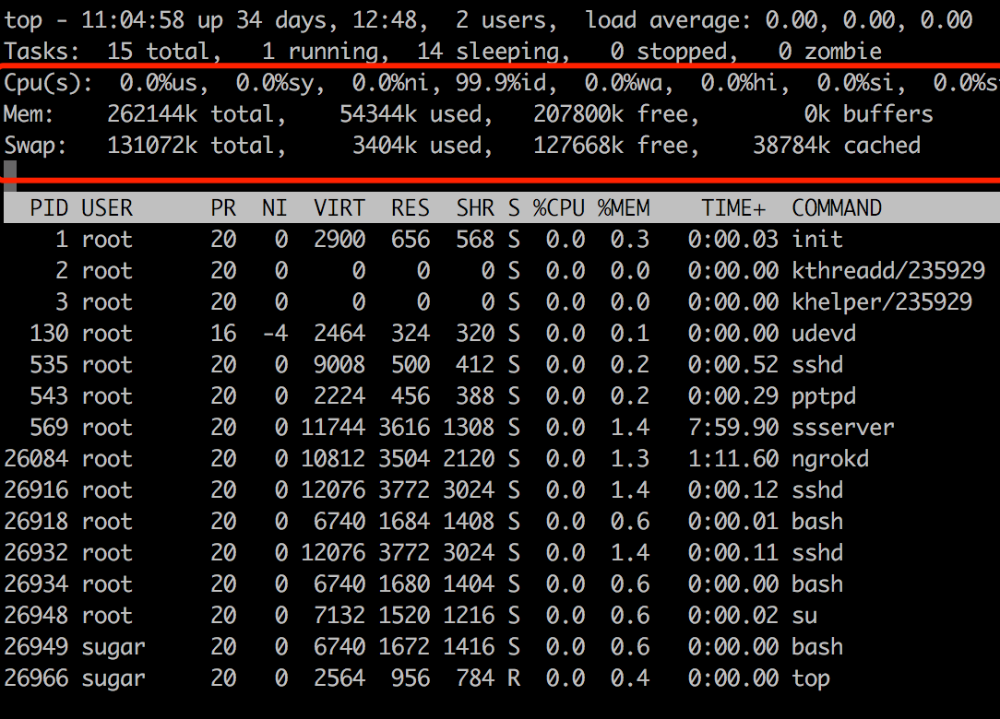
/proc/ 目录 用户和应用程序可以通过proc得到系统的信息，并可以改变内核的某些参数。由于系统的信息，如进程，是动态改变的，所以用户或应用程序读取proc文件时，proc文件系统是动态从系统内核读出所需信息并提交的。 可以使用cat /proc/cpuinfo 来查看cpu的配置信息。
查看磁盘
fdisk 命令 可以进行linux磁盘分区的管理，类似winpe下的disk genius，需要root用户才能执行，一般用不到。
df 命令 disk free可查看磁盘文件系统可用空间。 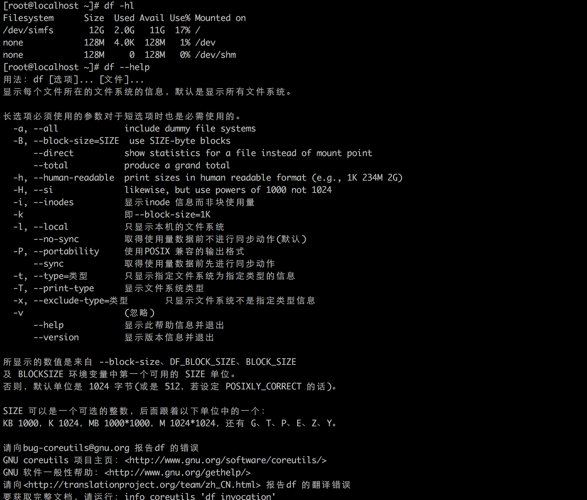
du 命令 disk used 可查看文件或目录占用磁盘的空间大小 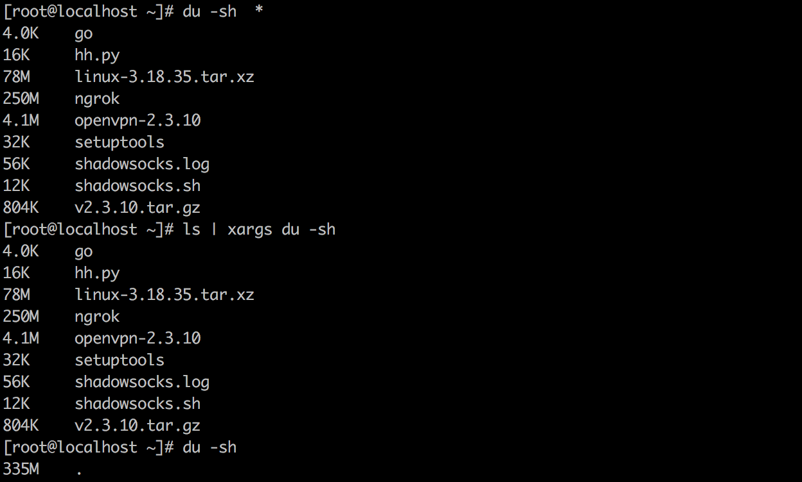 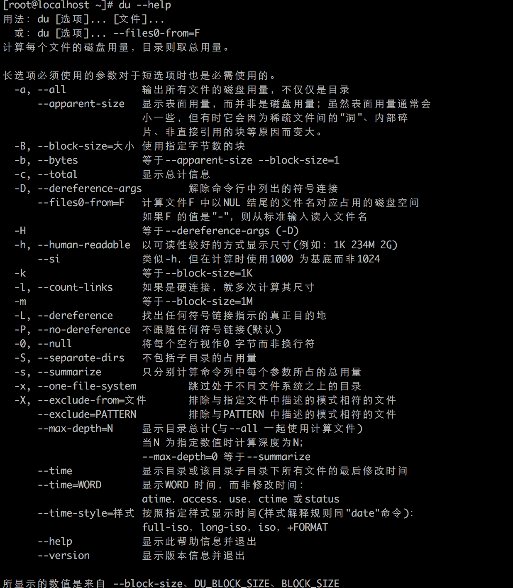
补充
ps
ps命令为我们提供了一次性的查看进程结果，它所提供的查看结果不是动态连续的； 可以通过ps命令查找到服务对应的PID 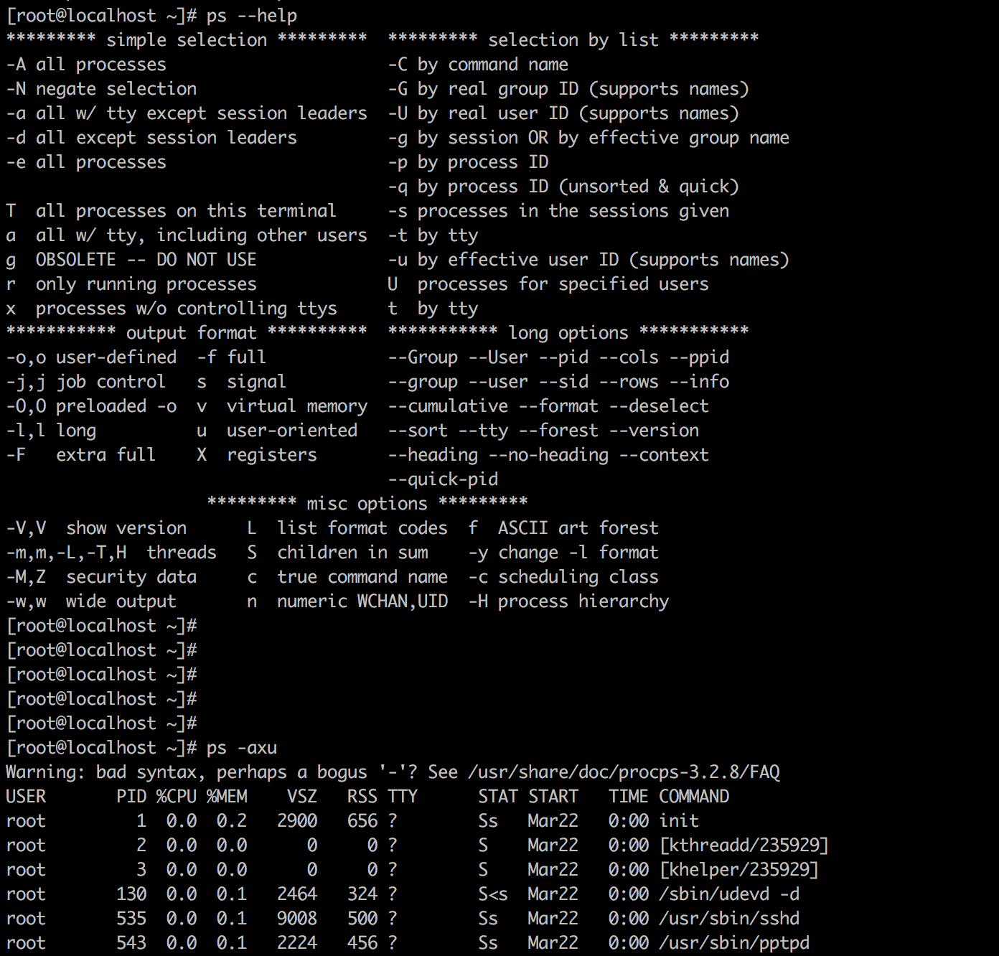
find
find命令主要用来在硬盘上搜索文件， find命令主要用于文件查找，列出当前目录及子目录下所有的文件和文件夹 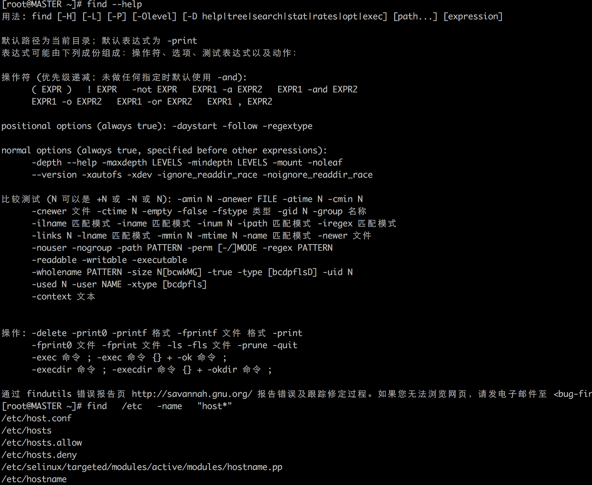
grep
Linux系统中grep命令是一种强大的文本搜索工具，它能使用正则表达式搜索文本，并把匹 配的行打印出来。grep全称是Global Regular Expression Print，表示全局正则表达式版本，它的使用权限是所有用户。 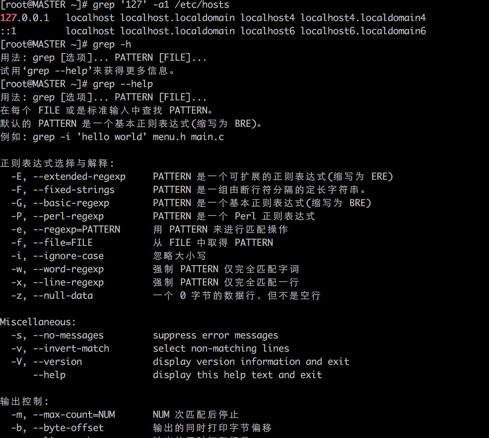
awk
awk是一个强大的文本分析工具，相对于grep的查找，sed的编辑，awk在其对数据分析并生成报告时，显得尤为强大。简单来说awk就是把文件逐行的读入，以空格为默认分隔符将每行切片，切开的部分再进行各种分析处理。
下面示例为显示所有docker镜像的id

leetcode题目 195. Tenth Line 194. Transpose File 答案
sed
sed主要用来自动编辑一个或多个文件；简化对文件的反复操作；编写转换程序等。 下面示例为在x.txt文件的第四行后添加一行，并将结果输出到标准输出， 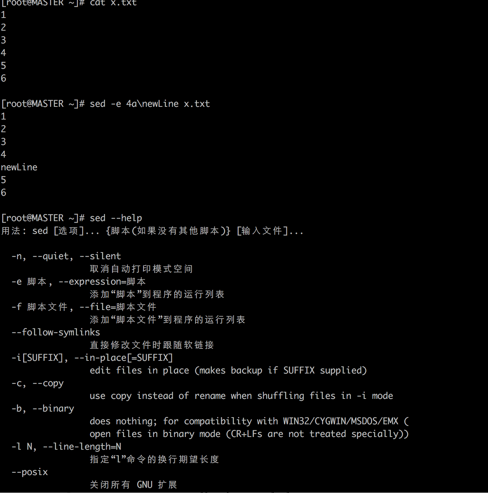
nohup
nohup 命令运行由 Command参数和任何相关的 Arg参数指定的命令，忽略所有挂断（SIGHUP）信号。在注销后使用 nohup 命令运行后台中的程序。要运行后台中的 nohup 命令，添加 & （ 表示“and”的符号）到命令的尾部。 使用 nohuo ...... & 的组合可以使程序在后台运行 以下示例为将test.py在后台执行，并查看其输出，最后kill进程的过程 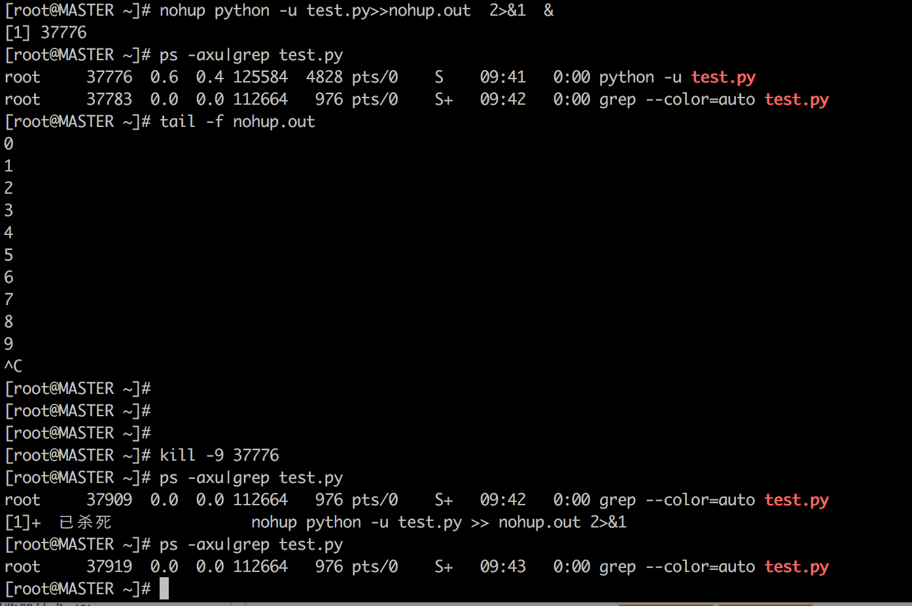
练习环境
新建ssh链接并登陆步骤（截图中地址用户名真实可用） 新建链接，输入名称主机地址端口号 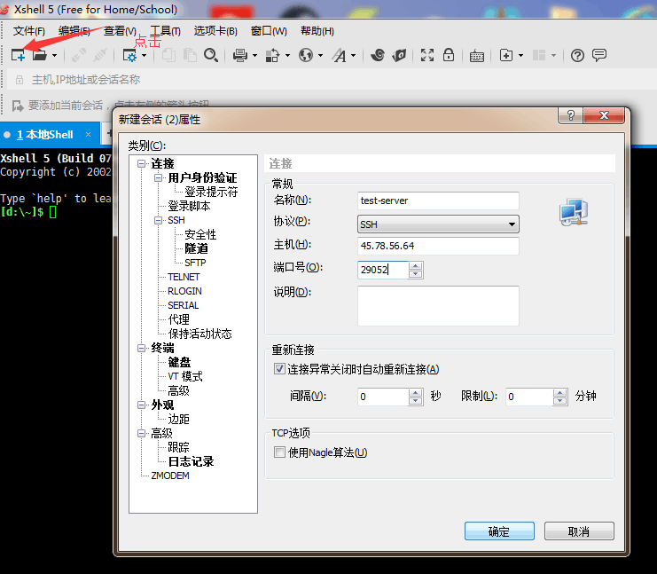 完成后点击用户身份验证输入用户名密码 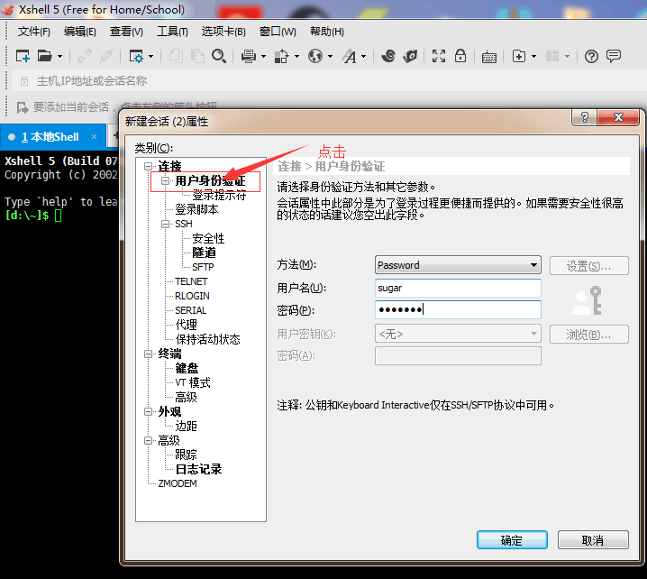 完成后点击链接即可见 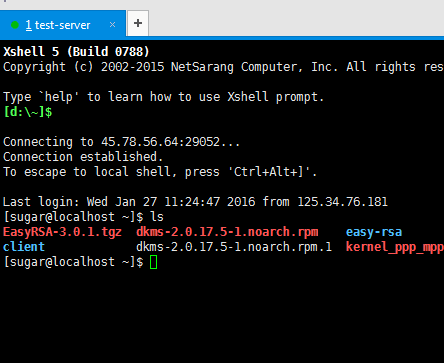
问题3 spring IOC 和 AOP
spring 目前Release 4.3.8 http://projects.spring.io/spring-framework/
参考博客
IOC
IOC（DI）：java程序中的每个业务逻辑至少需要两个或以上的对象来协作完成，通常，每个对象在使用他的合作对象时，自己均要使用像new object（） 这样的语法来完成合作对象的申请工作。你会发现：对象间的耦合度高了。而IOC的思想是：Spring容器来实现这些相互依赖对象的创建、协调工作。对象只需要关系业务逻辑本身就可以了。从这方面来说，对象如何得到他的协作对象的责任被反转了（IOC、DI）。
我的理解就是，业务对象之间的协作关系交由容器工厂去创建。
我需要完成一个通用性的树的加载组件，该组件需要可以适配DB、LDAP两种数据源，并且可以给出xml、json格式的数据。
- 要完成树的加载需要三个方法：获取根节点，获取某个节点下的子节点，获取某个节点下的所有子节点。
- 通过分析要想实现这样一个组件还需要两个协助对象：从具体数据源取得数据对象，将数据客户化为对应格式的数据。
以上思考相应代码定义。
由于需要支持DB、ldap两种数据源所以实现了LdapTree和DBTree。 由于需要支持xml、json的格式化数据所以实现了XmlWrapper和JsonWrapper
使用xml对业务中可能会使用到的对象进行定义： 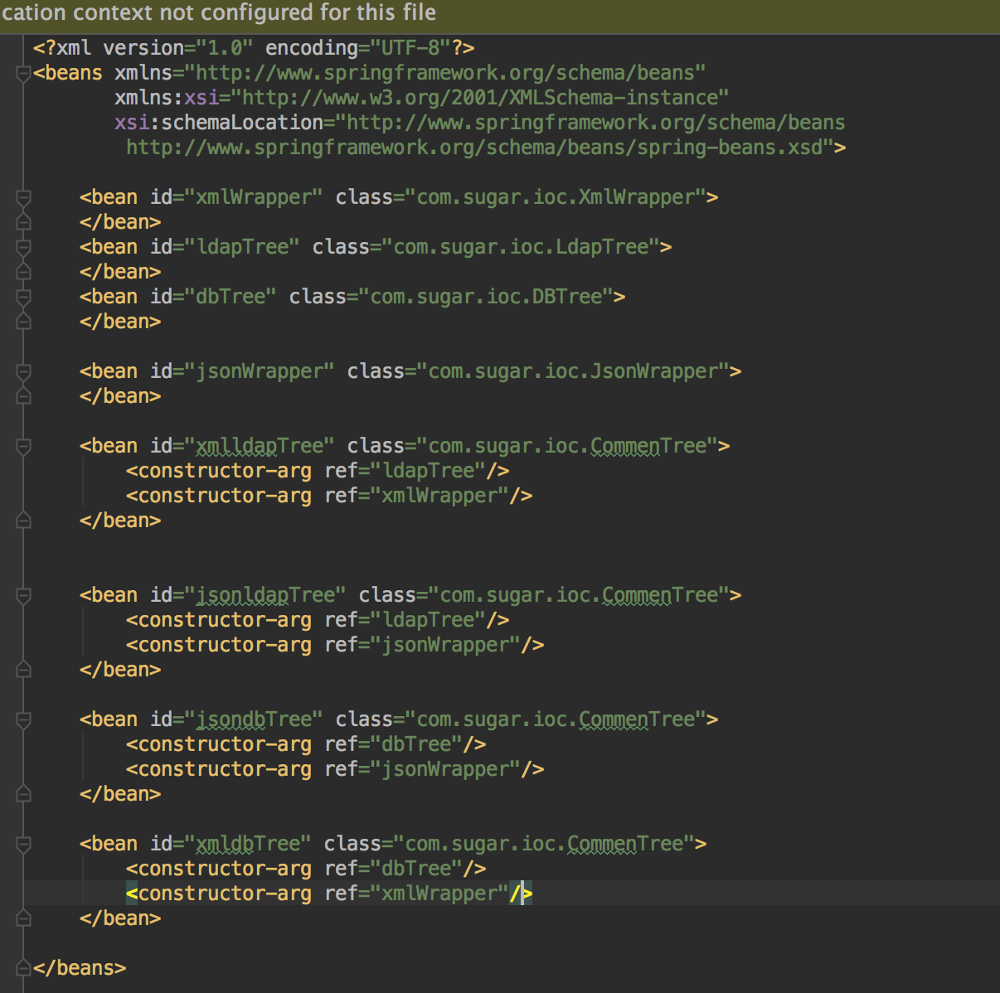
main函数，从xml配置中取得可使用的对象，如下根据具体的实际业务需要进行取得即可： ApplicationContext context = new FileSystemXmlApplicationContext( "applicationContext.xml");
CommenTree xmlldapTree = (CommenTree)context.getBean("xmlldapTree");
System.out.println(xmlldapTree.getRoot());
CommenTree jsonldapTree = (CommenTree)context.getBean("jsonldapTree");
System.out.println(jsonldapTree.getRoot());
CommenTree xmldbTree = (CommenTree)context.getBean("xmldbTree");
System.out.println(xmldbTree.getRoot());
CommenTree jsondbTree = (CommenTree)context.getBean("jsondbTree");
System.out.println(jsondbTree.getRoot());
以上即为容器最核心的部分，读取配置，根据定义实例化对象，在业务代码中使用对象。其他的高级用户都是对这几个步骤的扩展，比如读取配置实例化对象可以使用注解的形式。
AOP
定义
AOP（Aspect-OrientedProgramming，面向方面编程），可以说是OOP（Object-Oriented Programing，面向对象编程）的补充和完善。OOP引入封装、继承和多态性等概念来建立一种对象层次结构，用以模拟公共行为的一个集合。当我们需要为分散的对象引入公共行为的时候，OOP则显得无能为力。也就是说，OOP允许你定义从上到下的关系，但并不适合定义从左到右的关系。例如日志功能。日志代码往往水平地散布在所有对象层次中，而与它所散布到的对象的核心功能毫无关系。 AOP技术则恰恰相反，它利用一种称为“横切”的技术，剖解开封装的对象内部，并将那些影响了多个类的公共行为封装到一个可重用模块，并将其名为“Aspect”，即方面。所谓“方面”，简单地说，就是将那些与业务无关，却为业务模块所共同调用的逻辑或责任封装起来，便于减少系统的重复代码，降低模块间的耦合度，并有利于未来的可操作性和可维护性。AOP代表的是一个横向的关系，如果说“对象”是一个空心的圆柱体，其中封装的是对象的属性和行为；那么面向方面编程的方法，就仿佛一把利刃，将这些空心圆柱体剖开，以获得其内部的消息。而剖开的切面，也就是所谓的“方面”了。
实现AOP的技术，主要分为两大类：一是采用动态代理技术，利用截取消息的方式，对该消息进行装饰，以取代原有对象行为的执行；二是采用静态织入的方式，引入特定的语法创建“方面”，从而使得编译器可以在编译期间织入有关“方面”的代码。
相关概念
-
方面（Aspect）：一个关注点的模块化，这个关注点实现可能另外横切多个对象。事务管理是J2EE应用中一个很好的横切关注点例子。方面用Spring的 - Advisor或拦截器实现。
-
连接点（Joinpoint）: 程序执行过程中明确的点，如方法的调用或特定的异常被抛出。
-
通知（Advice）: 在特定的连接点，AOP框架执行的动作。各种类型的通知包括“around”、“before”和“throws”通知。通知类型将在下面讨论。许多AOP框架- 包括Spring都是以拦截器做通知模型，维护一个“围绕”连接点的拦截器链。Spring中定义了四个advice: BeforeAdvice, AfterAdvice, - ThrowAdvice和DynamicIntroductionAdvice
-
切入点（Pointcut）: 指定一个通知将被引发的一系列连接点的集合。AOP框架必须允许开发者指定切入点：例如，使用正则表达式。 - Spring定义了Pointcut接口，用来组合MethodMatcher和ClassFilter，可以通过名字很清楚的理解， - MethodMatcher是用来检查目标类的方法是否可以被应用此通知，而ClassFilter是用来检查Pointcut是否应该应用到目标类上
-
引入（Introduction）: 添加方法或字段到被通知的类。 Spring允许引入新的接口到任何被通知的对象。例如，你可以使用一个引入使任何对象实现 - IsModified接口，来简化缓存。Spring中要使用Introduction, - 可有通过DelegatingIntroductionInterceptor来实现通知，通过DefaultIntroductionAdvisor来配置Advice和代理类要实现的接口
-
目标对象（Target Object）: 包含连接点的对象。也被称作被通知或被代理对象。POJO
-
AOP代理（AOP Proxy）: AOP框架创建的对象，包含通知。 在Spring中，AOP代理可以是JDK动态代理或者CGLIB代理。
-
织入（Weaving）: 组装方面来创建一个被通知对象。这可以在编译时完成（例如使用AspectJ编译器），也可以在运行时完成。Spring和其他纯Java AOP框架一样，在运行时完成织入。意思就是改变代码的结果的过程。
使用场景
- Authentication 权限
- Caching 缓存
- Context passing 内容传递
- Error handling 错误处理
- Lazy loading 懒加载
- Debugging 调试
- logging, tracing, profiling and monitoring 记录跟踪 优化 校准
- Performance optimization 性能优化
- Persistence 持久化
- Resource pooling 资源池
- Synchronization 同步
- Transactions 事务
场景实现
继续试用ioc过程中的例子，实现对CommenTree类中方法的两个目标
- 进入方法前后记录日志
- 记录方法的运行时间
applicationContext.xml 增加配置
<bean id="log" class="aop.Log">
</bean>
<context:component-scan
base-package="com.sugar.ioc" />
<aop:config>
<aop:aspect ref="log">
<aop:pointcut
expression="(execution(* com.sugar.ioc.CommenTree.*(..)))"
id="treePointCut" />
<aop:around method="funcTime" pointcut-ref="treePointCut"/>
</aop:aspect>
</aop:config>
配置说明
- 使用aop:config/标签 定义aop；
- aop:aspect 定义切面；
- aop:pointcut/ 定义切入点
- aop:before/和aop:after/、aop:around/等定义切点的前后方法，around中可以执行运行方法的操作。
expression内容说明（了解就行了，感觉不会问） execution(* spring.ch3.topic1.Chief.*(..))
- 第一颗星表示返回任意类型；
- com.sugar.ioc.代表包名；
- CommenTree代表那个类；
- *(..)代表任意方法，里面的..表示任何参数
- 也可以简单点，全是用*这个东西来标注，不过一般不这样做，因为每一个切点对应的应该是不同的方法。
aop.Log 定义
funcTIme方法：
public Object funcTime(ProceedingJoinPoint joinPoint) throws Throwable {
funcIn(joinPoint);
long startTime = System.currentTimeMillis();//记录开始时间
Object object = joinPoint.proceed();
//类似于after执行后
long endTime = System.currentTimeMillis();
System.out.println("该方法执行时间为: " + (endTime - startTime));
System.out.println("退出方法,返回值为:"+ object.toString());
return object;
}
运行方式和在ioc中类似
ApplicationContext context = new FileSystemXmlApplicationContext(
"applicationContext.xml");
CommenTree xmlldapTree = (CommenTree)context.getBean("xmlldapTree");
System.out.println(xmlldapTree.getRoot());
System.out.println(xmlldapTree.getOneLevel("xxxxx"));
运行结果为：
问题4 java 6 7 8 的区别（实际应该是新特性）
java9已经有试用版本了 新特性详细说明 下面只做记录
java6 特性
- JSR199--Java Compiler API
- JSR269--Pluggable Annotation Processing API 通用的Annotations支持
- 支持JDBC4.0规范
- JAX-WS 2.0规范
java7 特性
- suppress异常(新语法)
- 捕获多个异常(新语法)
- try-with-resources(新语法)
- JSR341-Expression Language Specification(新规范)
- JSR203-More New I/O APIs for the Java Platform(新规范)
- JSR292与InvokeDynamic
- 支持JDBC4.1规范
- Path接口、DirectoryStream、Files、WatchService
- jcmd
- fork/join framework
- Java Mission Control
java8 特性
- lamda表达式(重磅)
- 集合的stream操作
- 提升HashMaps的性能
- Date-Time Package
- java.lang and java.util Packages
- Concurrency
问题5 J2EE Servlet
javaee
纠正2004年J2EE已经改名为javaee，现在已经发布到javaEE7 javaEE7白皮书
定义
Java EE最初是作为一个企业级应用部署平台来演进的。主要关注系统健壮性、Web Services和部署便易性。然后通过JCP（Java Community Process）社区的反馈意见不断的改进。Java EE 在企业IT、开发过程改善、部署、多层次应用管理、核心服务应用程序方面定义了一组通用标准。
比较常见的javaEE技术规范
- Java IDL
- JDBC
- RMI-IIOP
- JNDI
- JAXP
- StAX
- JAAS
- JMX
- JAX-WS
- JAXB
- JAF
- SAAJ
- Common Annotation
先参考 http://blog.csdn.net/zhou2s_101216/article/details/49474429 具体细节以后再说
servlet
servlet目前已经提交了4.0的JSR Servlet3.1规范
定义
servlet 是基于Java技术的web组件，容器托管的用于生成动态内容。像java的其他组件技术一样，servlet也是基于平台无关的java类格式，被编译成为平台无关的字节码，可以被基于java技术的web server动态加载并运行。容器，有时候也叫servlet引擎，是webserver为servlet功能扩展的部分。客户端通过servlet容器实现请求/应答模型与servlet交互。
servlet的生命周期
Servlet运行于应用服务器上的Web容器中（一般使用Tomcat）。应用服务器中用于管理Java组件的部分被称为容器。当Servlet被部署在应用服务器中以后，由容器控制Servlet的生命周期。Servelt在第一次请求的时候被加载和实例化。Servlet 一旦被加载和实例化，一般不会从容器中删除，直至应用服务器关闭或重新启动。所以第一次访问Servlet所有时间要多于以后访问Servlet所用的时间。
Servlet生命周期可被定义为从创建直到被销毁的整个过程，具体如下图: 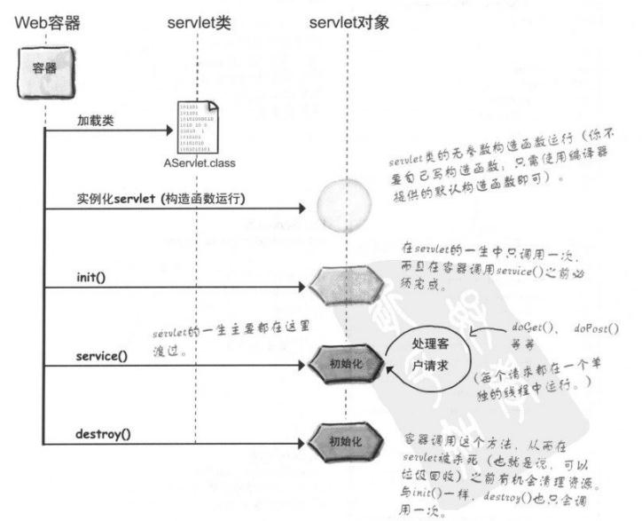 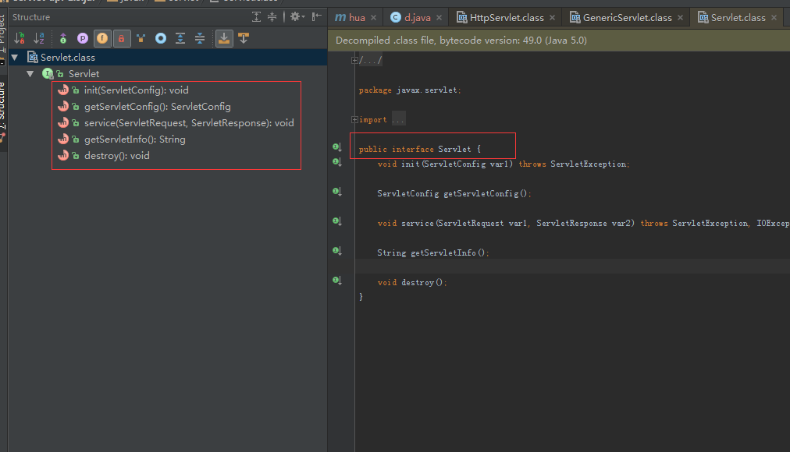 具体执行有以下五个步骤：
（1）加载Servlet类，创建该类的实例。每一个用户请求都会产生一个新线程；
（2）Servlet通过调用init()方法进行初始化；servlet实例被创建后，并在servlet能为客户请求提供服务前，容器会调用init()方法（只会调用一次）。可以访问ServletConfig和ServletContext对象，从而获取有关Servlet已经Web应用的信息，进而对Servlet做些初始化工作。
（3）Servlet调用service()方法来处理客户端的请求;当第一个客户请求到达时，容器创建或从线程池分配一个线程，调用service()方法（同时以参数形式传入请求和响应对象）。一般无需覆盖此方法，而是由其调用父类HttpServlet的service()，然后根据请求中的HTTP方法（Get或Post等），调用覆写的DoGet()或doPost()等方法（所以我们的Servlet中必须至少覆写doGet()及doPost()方法中的一个）。service()方法结束时，线程也结束（或者被回收到线程池）。
（4）Servlet通过调用destory()方法终止（结束）;，在容器移除Servlet前，使得Servlet能有机会关闭数据库连接、停止某些后台线程、将cookie列表和点击计数写入磁盘、以及执行其他清理工作等。
（5) 最后，Servlet由JVM的垃圾回收器进行垃圾回收。
常见servlet容器及比较
- tomcat（目前已release8.5）
- jetty（release9）
- Weblogic
- JBoss
jetty与tomcat比较
相同 Tomcat和Jetty都是一种Servlet引擎，他们都支持标准的servlet规范和JavaEE的规范。
不同点 架构比较
- Jetty的架构比Tomcat的更为简单
- Jetty的架构是基于Handler来实现的，主要的扩展功能都可以用Handler来实现，扩展简单。
- Tomcat的架构是基于容器设计的，进行扩展是需要了解Tomcat的整体设计结构，不易扩展。
性能比较
- Jetty和Tomcat性能方面差异不大
- Jetty可以同时处理大量连接而且可以长时间保持连接，适合于web聊天应用等等。
- Jetty的架构简单，因此作为服务器，Jetty可以按需加载组件，减少不需要的组件，减少了服务器内存开销，从而提高服务器性能。
- Jetty默认采用NIO结束在处理I/O请求上更占优势，在处理静态资源时，性能较高
- Tomcat适合处理少数非常繁忙的链接，也就是说链接生命周期短的话，Tomcat的总体性能更高。
- Tomcat默认采用BIO处理I/O请求，在处理静态资源时，性能较差。
其它比较
- Jetty的应用更加快速，修改简单，对新的Servlet规范的支持较好。
- Tomcat目前应用比较广泛，对JavaEE和Servlet的支持更加全面，很多特性会直接集成进来。
扩展
hhtp抓包
常用http抓包工具有 wireshark 、httpanalyzer
请求示例：
GET //oss.jpg HTTP/1.1
Host:oss-example. oss-cn-hangzhou.aliyuncs.com
Date: Fri, 28 Feb 2012 05:38:42 GMT
Range: bytes=100-900
Authorization: OSS qn6qrrqxo2oawuk53otfjbyc:qZzjF3DUtd+yK16BdhGtFcCVknM=
响应示例：
HTTP/1.1 206 Partial Content
x-oss-request-id: 28f6508f-15ea-8224-234e-c0ce40734b89
x-oss-object-type: Normal
Date: Fri, 28 Feb 2012 05:38:42 GMT
Last-Modified: Fri, 24 Feb 2012 06:07:48 GMT
ETag: "5B3C1A2E053D763E1B002CC607C5A0FE "
Accept-Ranges: bytes
Content-Range: bytes 100-900/344606
Content-Type: image/jpg
Content-Length: 801
Server: AliyunOSS
[801 bytes of object data]
http协议
常用http响应状态码（status code）：
100 （继续） 请求者应当继续提出请求。服务器返回此代码表示已收到请求的第一部分，正在等待其余部分。
200 （成功） 服务器已成功处理了请求。 通常，这表示服务器提供了请求的网页。
201 （已创建） 请求成功并且服务器创建了新的资源。
206 （部分内容） 服务器成功处理了部分 GET 请求。
300 （多种选择） 针对请求，服务器可执行多种操作。 服务器可根据请求者 (user agent) 选择一项操作，或提供操作列表供请求者选择。
301 （永久移动） 请求的网页已永久移动到新位置。 服务器返回此响应（对 GET 或 HEAD 请求的响应）时，会自动将请求者转到新位置。
302 （临时移动） 服务器目前从不同位置的网页响应请求，但请求者应继续使用原有位置来进行以后的请求。
307 （临时重定向） 服务器目前从不同位置的网页响应请求，但请求者应继续使用原有位置来进行以后的请求
400 （错误请求） 服务器不理解请求的语法。
401 （未授权） 请求要求身份验证。 对于需要登录的网页，服务器可能返回此响应。
403 （禁止） 服务器拒绝请求。
404 （未找到） 服务器找不到请求的网页。
500 （服务器内部错误） 服务器遇到错误，无法完成请求。
502 （错误网关） 服务器作为网关或代理，从上游服务器收到无效响应。
503 （服务不可用） 服务器目前无法使用（由于超载或停机维护）。 通常，这只是暂时状态。
504 （网关超时） 服务器作为网关或代理，但是没有及时从上游服务器收到请求。
505 （HTTP 版本不受支持） 服务器不支持请求中所用的 HTTP 协议版本。
http请求方法（request method）：
GET 请求获取由Request-URI所标识的资源。
POST 在Request-URI所标识的资源后附加新的数据。
HEAD 请求获取由Request-URI所标识的资源的响应消息报头。
OPTIONS 请求查询服务器的性能，或查询与资源相关的选项和需求。
PUT 请求服务器存储一个资源，并用Request-URI作为其标识。
DELETE 请求服务器删除由Request-URI所标识的资源。
TRACE 请求服务器回送收到的请求信息，主要用语测试或诊断。
常用http请求头（request header）:
Host：客户机通过这个头告诉服务器，想访问的主机名
Range：读取范围
User-Agent：客户机通过这个头告诉服务器，客户机的软件环境
Cookie：客户机通过这个头可以向服务器带数据
Accept:用于告诉服务器，客户机支持的数据类型
Accept-Charset：用于告诉服务器，客户机所采用的编码
Accept-Encoding：用于告诉服务器，客户机支持的数据压缩格式
Accept-Language：客户机的语言环境遇
常用http响应头（response header）
Location:这个头配合302状态码使用，用于告诉客户找谁
Server：服务器通过这个头，告诉浏览器服务器的类型
Content-Encoding：服务器通过这个头，数据的压缩格式
Content-Length：服务器通过这个头，告诉浏览器回送数据的长度
Content-Type：服务器通过这个头，告诉浏览器回送数据的类型
Last-Modified：服务器通过这个头，告诉浏览器当前资源缓存时间
Refresh：服务器通过这个头，告诉浏览器隔多长时间刷新一次
Content-Disposition：服务器通过这个头，告诉浏览器以下载方式打开数据
Transfer-Encoding：服务器通过这个头，告诉浏览器数据的传送格式
ETag：是实体标签(Entity Tag)的缩写。ETag一般不以明文形式相应给客户端
Expires：服务器通过这个头，告诉浏览器把回送的资源缓存多长时间，-1或0，则是不缓存
Cache-Control：no-cache
http请求方法的get和post的区别
-
GET请求的数据会附在URL之后（就是把数据放置在HTTP协议头中），以?分割URL和传输数据，参数之间以&相连。POST把提交的数据则放置在是HTTP包的包体中。
-
GET方式提交的数据最多只能是1024字节，理论上POST没有限制，可传较大量的数据，实际限制可能和具体web容器相关。
-
POST的安全性要比GET的安全性高。注意：这里所说的安全性和上面GET提到的“安全”不是同个概念。上面“安全”的含义仅仅是不作数据修改，而这里安全的含义是真正的Security的含义，比如：通过GET提交数据，用户名和密码将明文出现在URL上，因为(1)登录页面有可能被浏览器缓存，(2)其他人查看浏览器的历史纪录，那么别人就可以拿到你的账号和密码了，除此之外，使用GET提交数据还可能会造成Cross-site request forgery攻击。
servlet中httprequest/httpresponse定义
http协议的优劣
优点：
- 基于应用级的接口使用方便
- 程序员开发水平要求不高，容错性强
缺点：
- 传输速度慢，数据包大（Http协议中包含辅助应用信息） 如实时交互，服务器性能压力大。
- 数据传输安全性差
http2的改进
HTTP 2.0 ，相比于 HTTP 1.x ，大幅度的提升了 web 性能。在与 HTTP/1.1 完全语义兼容的基础上，进一步减少了网络延迟。而对于前端开发人员来说，无疑减少了在前端方面的优化工作。 HTTP 2.0 通过以下几点提高性能：
- request/response多路复用（multiplexing）：每个TCP连接都是全双工的
- 二进制帧传输（binary framing）
- 数据流优先级（stream prioritization）：每个流都有优先级，用于决定哪些流最重要
- 服务器推送（server push）
- 头信息压缩（header compression）